Fixed income attribution
From Wikipedia, the free encyclopedia
Fixed income attribution refers to the process of measuring returns generated by various sources of risk in a fixed income portfolio, particularly when multiple sources of return are active at the same time.
For example, the risks affecting the return of a bond portfolio include the overall level of the yield curve, the slope of the yield curve, and the credit spreads of the bonds in the portfolio. A portfolio manager may hold firm views on the ways in which these factors will change in the near future, so in three separate risk decisions he positions the assets in the portfolio to take advantage of the expected forthcoming market movements. If all views subsequently prove to be correct, then each decision will generate a profit. If one view is wrong, it will generate a loss, but the effect of the other bets may compensate. The overall performance will then be the sum of the performance contributions from each source of risk.
Attribution is therefore an extremely useful tool in verifying a fund manager’s claims to possessing particular investment skills. If a fund is marketed as being interest-rate neutral while providing consistent returns from superior credit research, then an attribution report will confirm this claim. Conversely, if the attribution report shows that this same manager is making non-zero returns from interest rate movements, then his exposure to interest rate risk is clearly not zero and his investment process clearly differs from his stated position.
Fixed income attribution therefore provides a much deeper level of information than is available from a simple portfolio performance report. Typically, such a report only shows returns at an aggregated level, and provides no feedback as to where the investor’s true skills lie. For these reasons, fixed income attribution is rapidly growing in importance in the investment industry.
Contents[hide] |
[edit] Sector-based attribution
One of the simplest fixed income attribution techniques is sector-based attribution. This is based on the standard Brinson-Fachler attribution scheme, where the securities in the portfolio and benchmark are divided up into buckets based on their modified duration.
This scheme has the advantage that it is readily understandable, particularly by managers who have an equity background. However, it does not provide a very deep analysis. The overall effects of a parallel change in the yield curve are supplied but there is none of the more detailed analysis supplied by a true fixed-income decomposition.
A useful account of sector-based attribution, with worked examples, is provided in Dynkin et al. (1998).
[edit] Yield curve attribution
A more widely-used approach to fixed income attribution is to decompose the returns of individual securities by source of risk, and then to aggregate these risk-specific returns over an entire portfolio. Typical sources of risk include yield return, return due to yield curve movements, and credit spread shifts. These sub-returns can then be aggregated over time and sector to give the overall portfolio return, attributed by source of risk. For a description of the mechanics of combining these sub-returns in a self-consistent manner, see Bacon (2004).
[edit] Sources of return
Over a given interval, the return of each security will be made up of return from various sub-returns (see below for explanations)
- return due to yield (equivalently coupon, or accrued interest, or running yield);
- return due to rolling down the yield curve;
- return due to movements in the reference yield curve;
- return due to credit shifts;
- other sources of return, such as option-adjusted spread (OAS), liquidity, inflation, etc.
[edit] First principles versus perturbational attribution
To calculate the return arising from each effect, we can reprice the security from first principles by using a pricing formula, or some other algorithm, before and after each source of return is considered. For instance, in calculating yield return, we might calculate the price of the security at the start and end of the calculation interval, but using the yield at the beginning of the interval. Then the difference between the two prices may be used to calculate the portfolio of the security’s return due to the passage of time.
This approach is simple in principle but can lead to operational difficulties. It requires
- accurate pricing formulae including, where relevant, ex-coupon, settlement, and country-specific conventions;
- security-specific data, such as day-count conventions and whether a bond has a non-standard first and last coupons;
- accurate inputs to these formulae, including market yields and other variable quantities such as the 90-day bank bill swap rate (BBSW) and consumer price index (CPI) factors for floating rate notes and inflation-linked securities, and regular updates for these quantities;
- a reconciliation function between existing performance measurement systems and the attribution system
For these reasons, a pricing model-based approach to attribution may not be the right one where data sourcing or reconciliation is an issue. An alternative solution is to perform a Taylor expansion on the price of a security
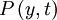
and remove higher order terms, which gives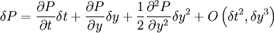
Writing the return of the security as
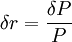
,this leads to the perturbation equation
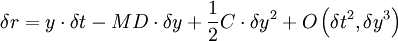
where the last term denotes higher-order corrections that may be ignored, and
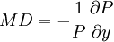
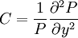
The terms MD and C measure first- and second-order interest rate sensitivity. These are conventionally referred to refer to as the modified duration and convexity of the security, and are often called risk numbers.
The data requirements for this approach to attribution are less onerous than for the first-principle approach. The perturbation equation does require externally calculated risk numbers, but this may not be a major obstacle, since these quantities are readily available from the same sources as yields and prices. There may also be inherent advantages in this approach with its ability to work with user-supplied risk numbers, since it allows the user to use sensitivity measures from in-house models, which is particularly useful where (for instance) the user has custom repayment models for mortgage-backed securities.
The approach is also self-checking, in that the size of the residual returns should be very low. If this is not the case, there will be presumably be an error in the calculated return or the risk numbers, or some other source of risk will be distorting the returns.
Conveniently, the perturbational approach may be extended to new asset types without requiring any new pricing code or types of data, and it also works for benchmark sectors as well as individual securities, which is useful if benchmark data is only available at sector level.
[edit] Modeling the yield curve
Historically, one of the most important drivers of return in fixed income portfolios has been the yield curve, and many investment strategies are expressed in terms of changes in the curve. Any discussion of fixed income attribution therefore requires an appreciation of how changes in the curve are described, and their effect on the performance of a portfolio.
If one is only interested in gross changes in the yield curve at a particular maturity, then one can read yields off the various datasets, using interpolation where necessary, and there is no need to model any part of the curve.
If, on the other hand, one wants to describe curve movements in terms used by traders (or to extrapolate), then some form of parameterization is required. The most widely used nomenclature for describing yield curve changes uses the terms "shift", "twist" and "butterfly". Briefly:
- shift measures the degree to which a curve has moved upwards or downwards, in parallel, across all maturities
- twist measures the degree to which the curve has steepened or flattened. For instance, one might measure the steepness of the Australian yield curve as the difference between the 10-year bond future yield and the 3-year bond future yield.
- curvature (or butterfly, or curve reshaping) measures the degree to which the term structure has become more or less curved. For instance, a yield curve that can be fitted to a straight line exhibits no curvature at all.
To describe these movements in numerical terms, typically requires fitting a model to the observed yield curve with a limited number of parameters. These parameters can then translated into shift, twist, and butterfly movements – or whatever other interpretation the trader chooses to use.
Two of the most widely used models are polynomial functions and Nelson-Siegel functions.
- Here, polynomial functions are usually of the form
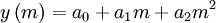
- where m is maturity, a0,a1,a2 are parameters to be fitted, and
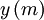
is the yield of the curve at maturity m.
- Nelson-Siegel functions take the form
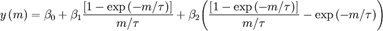
- where and m are as above, and β0, β1, β2 and τ, are parameters to be fitted via a least-squares or similar algorithm (see Diebold and Li [2006]):
-
- β0 is interpreted as the long run levels of interest rates (the loading is 1, it is a constant that does not decay);
- β1 is the short-term component (it starts at 1, and decays monotonically and quickly to 0);
- β2 is the medium-term component (it starts at 0, increases, then decays to zero);
- τ is the decay factor: small values produce slow decay and can better fit the curve at long maturities, while large values produce fast decay and can better fit the curve at short maturities; τ also governs where β2 achieves its maximum.
Once a curve has been fitted, the user can then define various measures of shift, twist and butterfly, and calculate their values from the calculated parameters. For instance, the amount of shift in a curve modeled by a polynomial function can be modeled as the difference between the polynomial a0 parameters at successive dates. In practice, the Nelson-Siegel function has the advantages that it is well-behaved at long maturities, and that its parameters can be set to model virtually any yield curve (see Nelson and Siegel [1987]).
[edit] Factor-based attribution
A factor-based model of yield curve movements is calculated by deriving the covariance matrix of yield shifts at predefined maturities, and calculating the eigenvectors and eigenvalues of this matrix. Each eigenvector corresponds to a fundamental model of the yield curve, and each eigenvector is orthogonal, so that the curve movement on any given day is a linear combination of the basis eigenvectors. The eigenvalues of this matrix then give the relative weights, or importance, of these curve shifts. [Phoa (1998)].
Factor models use a large sample of historical yield curve data and construct a set of basis functions that can be linearly combined to represent these curve movements in the most economical way. The algorithm always attributes as much of the curve movement to the first basis function, then as much as possible to the second, and so on. Since these functions roughly correspond to our shift and twist motions, this approach attributes almost all of the curve change to these two modes, leaving a very small contribution from higher modes. Typical results attribute 90% of curve movements to shift changes, 8% to twist, and 2% to curvature (or butterfly) movements. However, the issue that these basis functions may be different from those in which the risk decisions were expressed is not widely appreciated.
Since conventional risk analysis for fixed income instruments usually assumes a parallel yield shift across all maturities, it would be most convenient if a parallel motion mode turned out to dominate the other modes, and in fact this is more or less what occurs.
While a factor-based decomposition of term structure changes is mathematically elegant, it does have some significant drawbacks for attribution purposes:
- Firstly, there is no agreement as to what these fundamental modes actually are, since they depend on the historical dataset used in the calculation (unlike, say, a parallel curve shift – which may be defined in purely mathematical terms). Each market, over each analysis interval, will therefore produce a different set of fundamental modes and hence different attribution decompositions, and so it may be impossible to compare sets of attribution results over longer intervals.
- By deciding to use such an approach, one is implicitly locked into a particular data history and (in practice) data/software vendor.
- The shape of the modes may not match user expectations, and in practice it will be most unlikely that the portfolio will be managed and hedged with reference to these fundamental modes. A manager is more likely to view future curve movements in terms of a simple shift and twist.
The great advantage of a factor-based approach is that it ensures that as much curve movement as possible is attributed to shift movement, and that shift and twist motion are given as small values as possible. This allows apparently straightforward reporting, because hard-to-understand curve movements are always assigned small weights in an attribution analysis. However, this is at the cost of a distortion of the other results. On the other hand, a naïve interpretation of the terms shift, twist, curvature when applied to yield curve movements may well give rise to higher order movements that are much higher than investors would expect.
There are also problems in the exact definition of the terms shift and twist. Without fixing a twist point at the outset, there is no unique value for these terms in either a Nelson-Siegel or polynomial formulation. However, the location of this twist point may not match user expectations. For a deeper discussion of this point, see Colin (2005).
[edit] Interest returns
The first source of return in a fixed income portfolio is that due to interest. The majority of securities will pay a regular coupon, and this is paid irrespective of what happens in the marketplace (ignoring defaults and similar catastrophes). For instance, a bond paying a 10% annual coupon will always pay 10% of its face value to the owner each year, even if there is no change in market conditions.
However, the effective yield on the bond may well be different, since the market price of the bond is usually different from the face value.
Yield return is calculated from
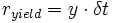
where y is the security’s yield to maturity, and δt is the elapsed time.
Towards the end of the bond’s life we often see a pull-to-parity effect. As maturity approaches, a bond’s price converges to its nominal amount, irrespective of the level of interest rates, and this may cause a bond’s price to move in a different way to what would normally be expected.
[edit] Roll return
Roll return can occur when a yield curve is steeply sloped. In the absence of any changes in the curve, as a security is held over time its maturity will decrease and the yield (as read off the curve) will change. If the slope is positive, the yield will decrease and the security’s price will increase.
Positioning a portfolio’s assets to take advantage of a steeply sloping yield curve is sometimes called riding the yield curve. Strictly speaking, roll return belongs in a separate category, as it is neither a strict yield effect nor a return caused by a change in the yield curve.
[edit] Yield curve attribution
Changes in term structure form one of the most important sources of risk in a portfolio. Unlike an equity price, which just moves one-dimensionally, the price of a fixed income security is calculated from sum of discounted cash flows, where the discount rate used depends on the interest rate at that maturity. The magnitude and shape of curve changes are therefore of major importance to fixed income managers.
At the most basic level, we can break down yield changes in terms of treasury shift and credit shift. At any maturity, we can compare the change in the target security with the change in the corresponding government-backed security, which will have the highest credit rating and hence the lowest yield. All securities have yields equal or greater than their equivalent-maturity government securities, which act as a benchmark for movements in the marketplace.
Many investment-grade securities are traded at a spread to the Treasury curve, with the size of this spread depending on current economic conditions and the credit rating of the individual security. For instance, in April 2005 General Motors debt was downgraded to non-investment, or junk, status by the ratings agencies. As a result the credit spread (or return demanded by investors for holding this riskier investment) rose by over 150 basis points, and the value of General Motors bonds accordingly fell. The loss in performance this caused was attributed entirely due to credit effects.
Since the yield of virtually any fixed income instrument is affected by changes in the shape of the Treasury curve, it is not surprising that traders examine future and past performance in the light of changes to this curve.
[edit] Appropriate yield curves
It is not always appropriate to use a single yield curve throughout a portfolio, even for instruments traded from a particular country. Inflation-linked securities use their own curve, whose movements may not show strong correlation with the yield curve of the broader market. Short-term money market securities may be better modeled by a separate model for the bill curve, and other markets may use the swap curve rather than the treasury curve.
[edit] Credit attribution
The situation is complicated by recent innovations in the credit markets and explosive growth of instruments that allow credit risk to be precisely targeted, such as credit-default swaps and the ability to split different tranches of instruments in collateralized debt obligations (CDO).
The simplest way to regard return on credit is to see it as return made by changes in a security’s yield, after changes due to movements in the market’s reference curve have been removed. This may be quite adequate for a simple portfolio, but for traders who are deliberately interest-rate neutral and are making all their returns from credit bets, something more detailed is probably necessary.
An alternative way to regard the higher yields of credit instruments is to regard them as being priced off different yield curves, where these credit curves lie above the reference curve. The lower the credit rating, the higher the spread, thus reflecting the extra yield premium demanded for greater risk. Using this model we can describe returns of, say, an A-rated security in terms of movements in the AAA curve, plus movements (tightening or widening) in the credit spread.
Other ways to look at the return generated by credit spreads is to measure the yield of each security against an industry sector curve, or (in the case of Eurobonds) to measure the spread between bonds of the same credit rating and currency but differing by country of issue.
[edit] Attribution on mortgage- backed securities
Mortgage-backed securities (MBS) are substantially more complex to price than vanilla bonds, due to the uncertainties implied by the prepayment option included in the instrument’s structure. Ideally, the returns generated by these other risks should be shown in the attribution report.
[edit] Simple risk measures
The simplest measure of interest-rate sensitivity for an MBS is its effective duration. The modified duration of a bond assumes that cash flows do not change in response to movements in the term structure, which is not the case for an MBS. For instance, when rates fall, the rate of prepayments will probably rise and the duration of the MBS will also fall, which is entirely the opposite behavior to a vanilla bond. For this reason, effective duration De is a better single-figure measure of interest-rate sensitivity, where
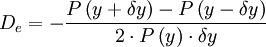
Here,
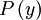
is the price of the MBS at yield y , calculated using an appropriate prepayment model.While compact, effective duration only measures the effect of a parallel shift in the yield curve across all maturities. It does not take into effect other risk factors, such as non-parallel yield curve shifts, convexity, option-adjusted spreads, and others. However, effective duration may suffice for many managers as a basic risk measure.
Virtually no research has been published on the attribution of other sources of risk for MBS.
[edit] Key rate durations
For managers who need to account for changes in the shape of the yield curve in detail, a single risk measure for interest-rate sensitivity is insufficient and a more detailed way of measuring changes across the entire term structure is required.
One of the most popular techniques to accomplish this is the use of key-rate durations (KRDs), introduced by Ho (1992). Ho defines a number of maturities on the yield curve as being the key rate durations, with typical values of 3 months, 1, 2, 3, 5, 7, 10, 15, 20, 25 and 30 years. At each point, we define a duration that measures interest-rate sensitivity to a movement at that point only, with the effect of the duration at other maturities decreasing linearly to the neighboring points.
In other words, a key rate duration measures the effect of a change in the yield curve that is localized at a particular maturity, and restricted to the immediate vicinity of that maturity, usually by having the change drop linearly to zero at neighboring points.
Of course, the yield curve is most unlikely to behave in this way. The idea is that the actual change in the yield curve can be modeled in terms of a sum of such saw-tooth functions. At each key-rate duration, we know the change in the curve’s yield, and can combine this change with the KRD to calculate the overall change in value of the portfolio. In other words,
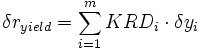
where the sum is across all key rate maturities.
The sum of an instrument’s key rate durations is approximately equal to its modified duration. The sum may not be exact because modified duration assumes a flat yield curve, which is seldom the case.
This approach can easily be combined with the earlier decomposition into shift, twist and curvature components to give price changes due to these yield curve movement types. For instance, suppose we know the amount by which the yield curve has steepened at each key rate maturity. Then the return of the MBS due to a steepening Treasury curve is given by
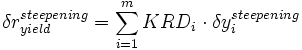
[edit] Other risk factors
MBS have many more risk factors than are used for vanilla bonds, and an attribution scheme needs to model them all. They include
- option-adjusted spread, or the extra yield demanded by the security holder to compensate for the mortgage repayment option;
- current-coupon spread
- volatilities
- convexity
- cost of carry
While all these factors can be important in accounting for changes in MBS returns, in practice a particular user may only select a subset. The reason is that a perturbational analysis requires the provision of risk sensitivity numbers for each factor, and in some cases these may simply not be available. The return made by such uncomputed risks may be grouped into an ‘Other’ category in the attribution report.
[edit] Benchmarks
The importance of benchmarks in fixed income attribution remains widely underestimated.
To perform attribution on a portfolio, one must also run attribution on its associated benchmark, and this frequently presents substantial difficulties. To provide attribution information at the same level of detail for a benchmark, one needs extensive, detailed weights and returns, and these are often hard to find. For instance, many widely used benchmarks contain thousands of bonds. Deriving the security-level returns of an industry benchmark so that the overall returns match the published figures remains a major challenge for most practitioners.
While benchmarks may have much greater uniformity of instrument type than managed portfolios, the sheer number of securities – and the data maintenance issues required to reprice each one, and to ensure that the correct coupon amount and timing is used when a coupon is paid – means that detailed benchmark modeling remains extremely difficult. There are also issues involving transparency of benchmark calculations, with many of the underlying actions remaining obscure.
Even pricing data can be difficult to come by in some cases. For some Asian benchmarks, illiquid markets can mean that accurate yield data is not published at all, which can make calculation of risks very difficult.
[edit] Future challenges
The sheer variety of the fixed income markets, and the pace of innovation in this area, means that provision of an attribution capability from scratch will continue to present significant challenges. In no particular order, issues to be faced include
- many more risk factors than in the equity world
- much more complex instrument types
- new types of instrument continually appear
- no standard approach to attribution – sector, yield-curve based, factor based
While there remain numerous challenges to solve, the state of fixed income attribution is much less murky than was the case even five years ago. The reasons include
- better third-party software systems
- more demanding users
- easier access to data
- cheaper and more powerful computing systems
- better understanding of how to perform attribution
[edit] References
- Bacon, C. (2004). Practical portfolio performance measurement and attribution, Wileys
- Colin, A.M. (2005). Fixed income attribution, Wileys
- Diebold, F.X. and Li, C. (2006). Forecasting the term structure of government bond yields. Journal of Econometrics, 130, pp. 337–364
- Dynkin, L., Hyman, J., Vankudre, P., (1998). Attribution of portfolio performance relative to an index, Lehman Brothers Fixed Income Research, March
- Ho, T. (1992). Key rate durations: measures of interest rate risk, Journal of Fixed Income, 2, pp. 29–44
- Nelson, C.R., Siegel, A.F. (1987). Parsimonious modeling of yield curves, Journal of Business, 60(4), pp.473–489
- Phoa, W. (1998). Advanced fixed income Analytics, Frank Fabozzi Associates